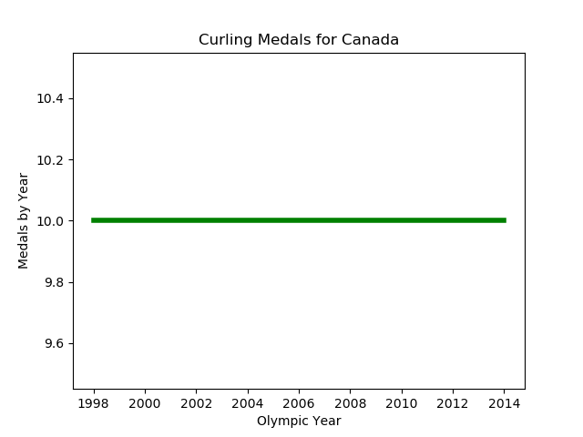
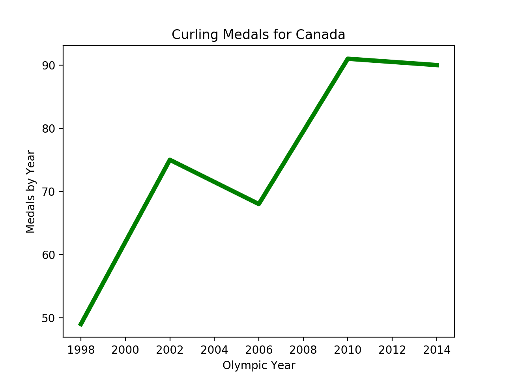
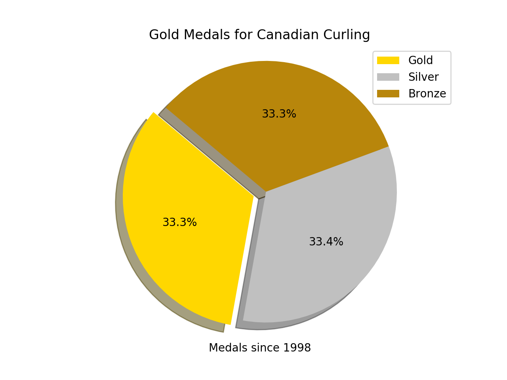
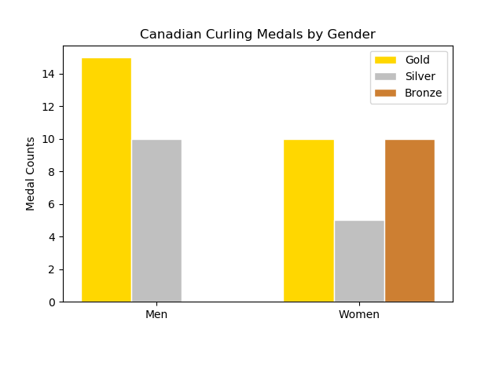
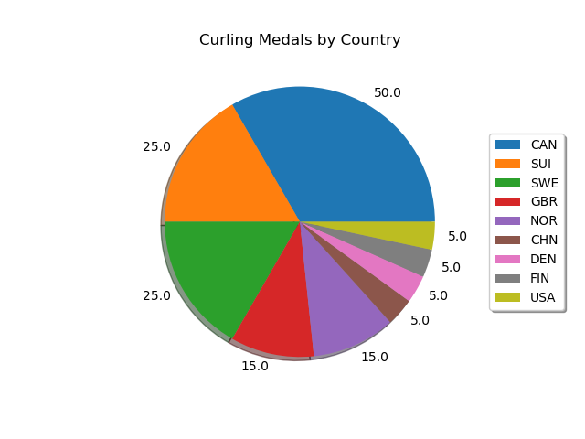
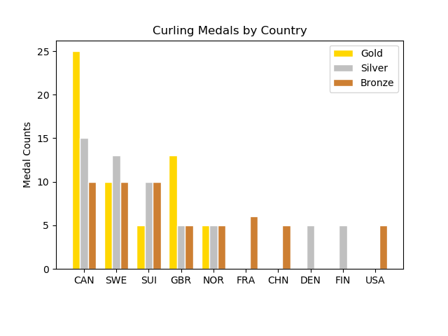

We all know how awesome Canada is at hockey, but how are we at Curling? Curling came into the Winter Olympics official at the 1998 Nagano Japan Olympics. Our women’s team won Gold that year, giving us a strong start to our Curling reputation at the Winter Olympics. From the line chart that shows our men’s and women’s teams are continuously winning medals in Curling.


Let’s look more at the Men’s and Women’s breakdown. Both men and women have consistently won medals, but the men have won more Gold than the women. It’s clear that men and women both dominate at curling. So how do we fair against the world?


Here we can see just how awesome Canada is bringing home the medals in Curling. Our biggest competitors are Switzerland and Sweden. We leave America in the dust here just like in Hockey. Overall our data is showing us that our Canadian Curling teams have an amazing reputation for being the teams to beat at the Winter Olympics.

